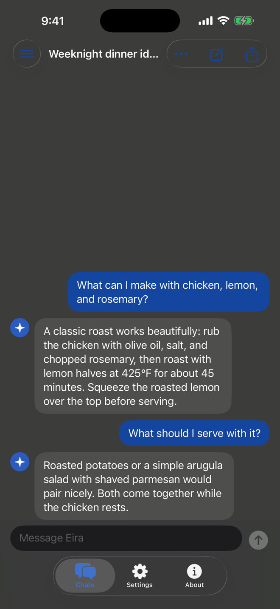
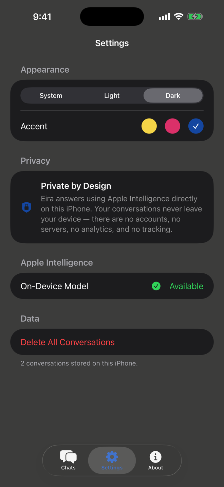
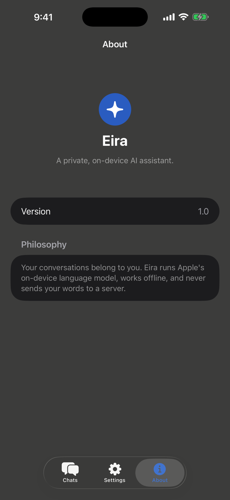

Private by Design
Core conversations are processed on your iPhone and saved in the app’s local storage.
Eira for iPhone
Helpful AI conversations powered by Apple’s on-device Foundation Models. No account, external AI service, or API key required.

A quieter kind of AI
Eira keeps AI chat focused: open the app, ask what you need, and get a response from the model already on your device. No sign-up flow and no separate AI provider between you and the answer.
Why Eira
Core conversations are processed on your iPhone and saved in the app’s local storage.
Eira uses Apple’s Foundation Models framework instead of a third-party AI API.
Start a conversation without registering, signing in, or supplying an API key.
Built in Swift and SwiftUI, Eira is fast, responsive, and at home on iOS.
The app
Eira opens into a clean, native chat experience. Responses stream as they are generated, recent conversations stay close, and privacy controls remain easy to find.
Chat screenshot, 1 of 3


Privacy
Core chat runs without an Eira-operated AI server. Your prompts and Eira’s responses remain in local app storage unless you choose to share or export them.
Read the privacy policyApple Intelligence generates core chat responses on your compatible iPhone.
The core experience has no registration, profile, or sign-in requirement.
You do not need credentials for a third-party model provider.
Conversation history is saved within Eira on your iPhone and can be deleted in the app.
Compatibility
Eira relies on Apple’s on-device model, so all four requirements must be met before chat is available.
No. Eira’s core chat experience does not require registration or sign-in.
Core chat is designed to work offline after Apple Intelligence is enabled and its on-device model is available. Setup and model downloads may require internet access.
No. Eira has no server dependency for core chat. Conversations are processed on device and stored locally by the app.
Eira requires an iPhone that supports Apple Intelligence, iOS 26 or later, Apple Intelligence enabled, and a supported language and region.
Not currently. The documented release is for iPhone; iPad and Mac support are future possibilities.
Delete one chat from its conversation menu, or open Eira Settings and choose Delete All Conversations.
Visit the Eira Support page for troubleshooting and compatibility help, or email support@example.com.
Support
Find compatibility guidance, troubleshooting steps, and answers to common questions.